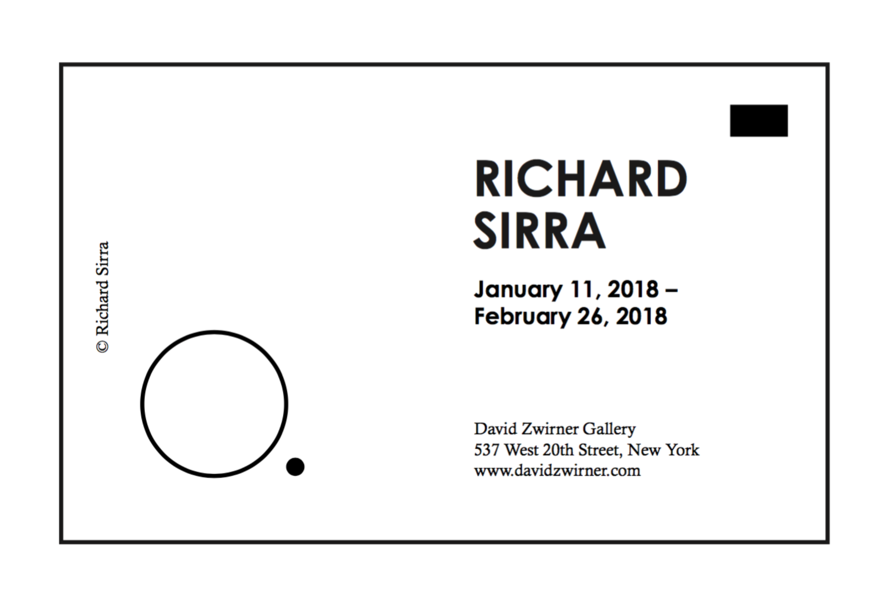
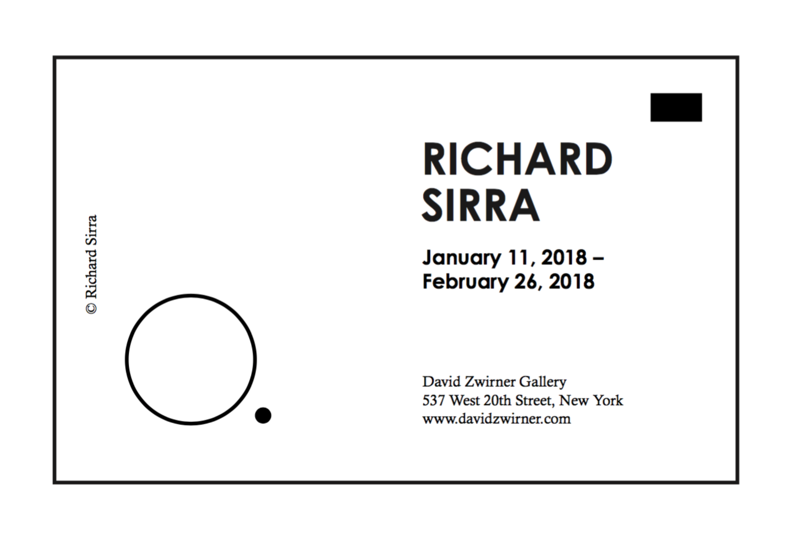
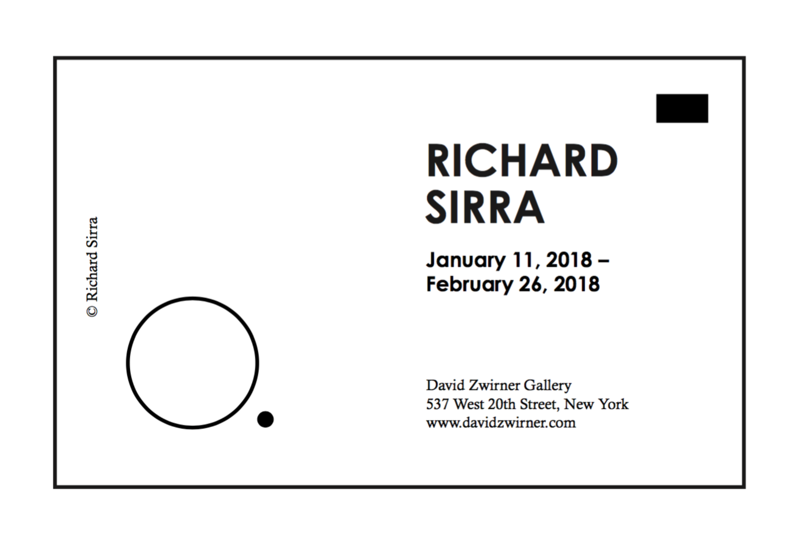

Xinchen Zhang
graphic design
photography
archive
Post card design
A post card designed for the exhibition for Richard Serra, who is a minimalist artist, in order to match the style of his work, I chose "Futura" as the font due to its round shape.

Next
Previous
 
